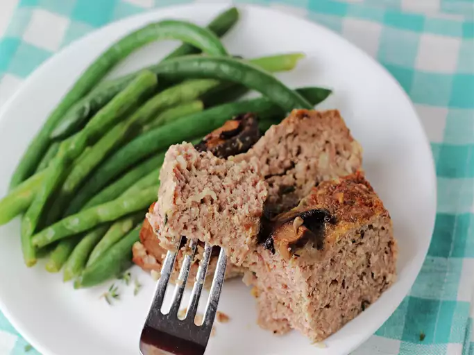

Air Fryer Meatloaf

Description
This air fryer meatloaf recipe is easy to make with just a few ingredients. It will take only around 35 minutes to
make (including prep time) and it will serve 4 people.
You'll find a detailed ingredient list and step-by-step instructions in the recipe below, but let's go over the
basics:
Ingredients
- For the meatloaf: bread crumbs, whole milk, ground round, yellow onion, egg, chopped fresh thyme, salt, and pepper
- For the glaze:ketchup, apple cider vinegar, light brown sugar, Worcestershire sauce, and cooking spray
Step-by-Step
- Soften breadcrumbs in milk, then mix with beef, onion, egg, and seasonings in a bowl.
- Form the beef mixture into two small meatloaves.
- Make the glaze.
- Cook in air fryer at 350 degrees F until browned (start checking at 15 minutes ), brushing evenly with glaze toward the end of cooking time.